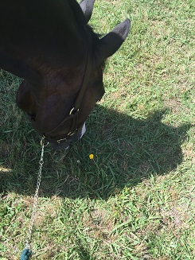
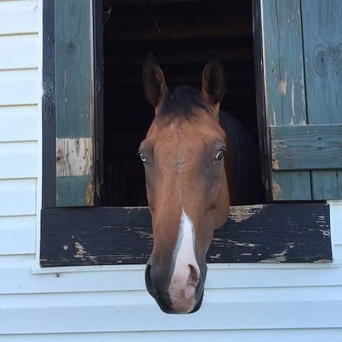

Horseback riding is something I love to do. I've been riding since I was little and it's still my favorite thing to do. I lease a horse named Amerigold and he is such a great horse. I go to shows through out the season which I have lots of fun at. When I first started riding, I was at Grove Station Farms it's such a great barn and I was so close to everyone there. When I got involved in IEA I had to switch barns and thats when I moved to Top Call Farms.
IEA is a program im involved with in which I can get a scholarship to a college if I do well enough. Im part of a great team and we have lots of people on it. All of my team mates are very sweet and good at riding. We also have good horses that we bring to shows. In this program, we do five shows each year. The season usually ends around january unless you make it to regionals or nationals.
Running is another activity I like to do. My mom got me involved in running and now it's something I do whenever I get bored and want something to do. My brother and I both injoy it, and we both run for our schools. Im better at short distance than long, but it's good for me to do both.
I run cross country for Mann, and it's okay. Once the weather cools down a bit it will be a little bit better. This is my first year doing it, so I dont have much to say about it. Most of the girls on the team are very sweet and im glad im a part of it.
Katie B.